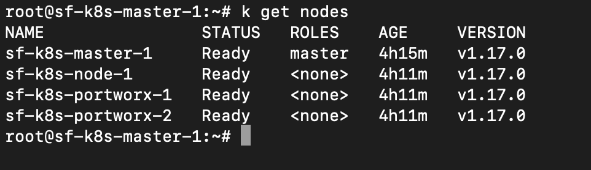
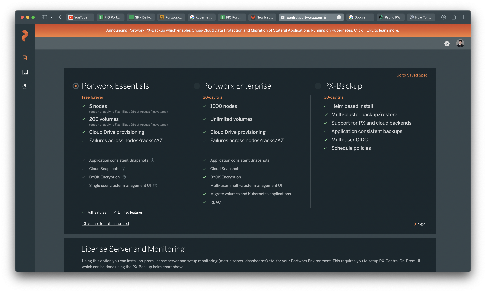
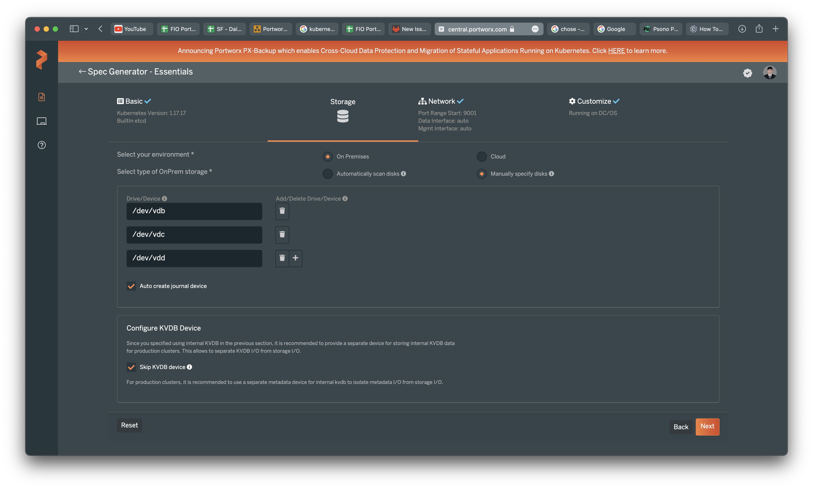
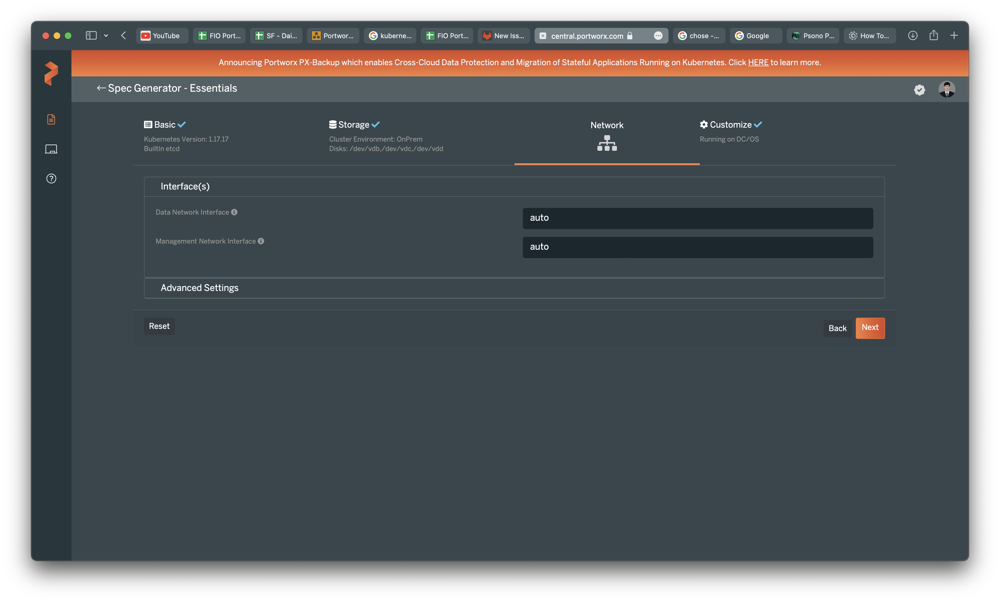
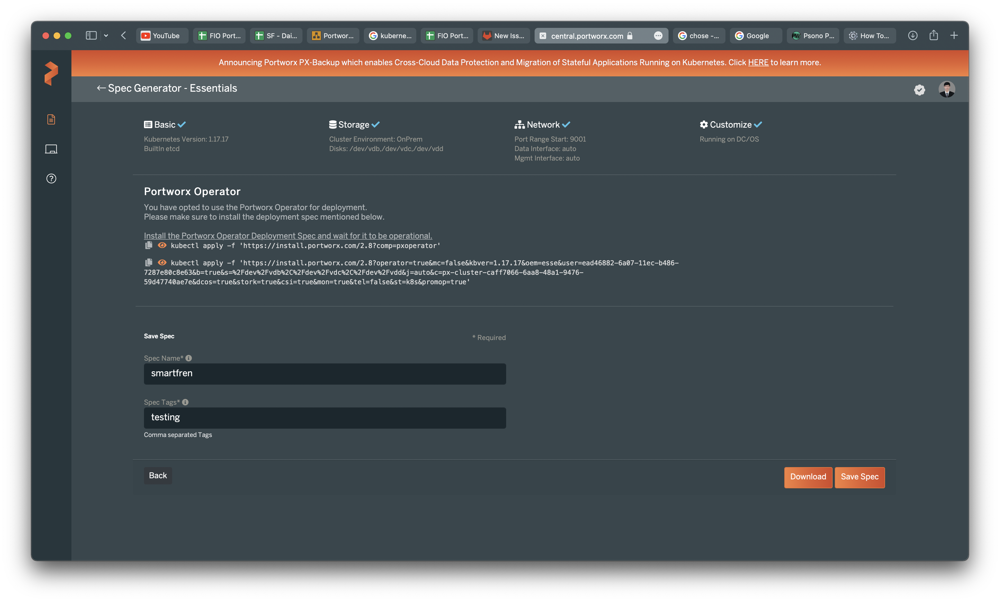
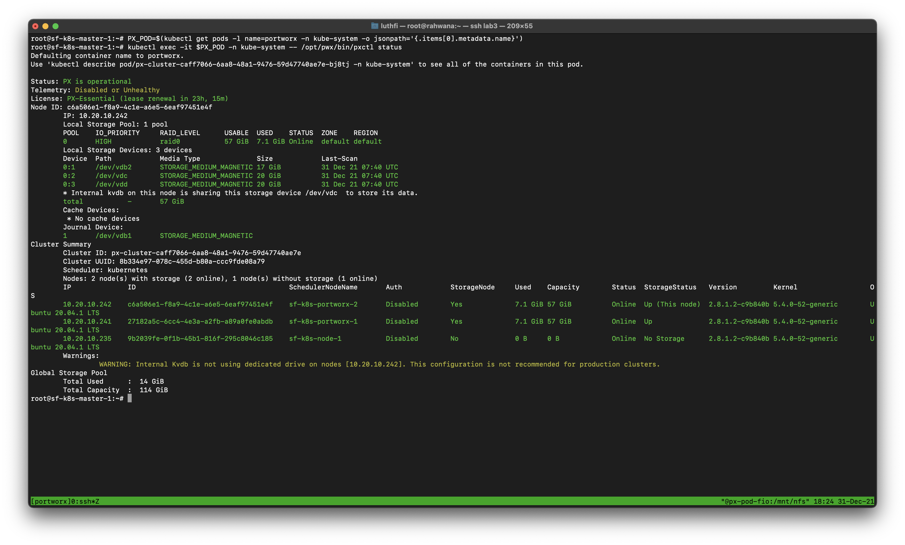

Deploy PortWorx storage in kubernetes
Specification : Kubernetes, PortWorx, Storage
PortWorx storage cluster
Portworx by Pure Storage is a cloud native storage solution, provides a fully integrated solution for persistent storage, data protection, disaster recovery, data security, cross-cloud and data migrations, and automated capacity management for applications running on Kubernetes. If you see in each of documents, portworx have big IOPS & Bandwidth.
Lab Topology

| IP Address | Nodes |
|---|---|
| 10.20.10.230 | sf-k8s-master-1 |
| 10.20.10.235 | sf-k8s-node-1 |
| 10.20.10.241 | sf-k8s-portworx-1 |
| 10.20.10.242 | sf-k8s-portworx-2 |
First, make your k8s cluster already running
If your cluster ready, you can check in previous docummentation for installation https://assyafii.com/docs/install-kubernetes-cluster-multi-master-ha/

Add labels px/metadata-node=true for portworx nodes
kubectl label nodes sf-k8s-portworx-1 sf-k8s-portworx-2 px/metadata-node=true
Create portworx template generator
1. Login to https://central.portworx.com/specGen/wizard & choose version 
2. Checklist use operator
3. You need configure KVDB Devices if production, for testing skip this 
4. Skip network configuration 
5. Add cluster name prefix

6. Apply deployment to cluster from template created 
Verification
Checks status POD portworx running
kubectl get pods -n kube-system
If running all, check cluster portworx
PX_POD=$(kubectl get pods -l name=portworx -n kube-system -o jsonpath='{.items[0].metadata.name}')
kubectl exec -it $PX_POD -n kube-system -- /opt/pwx/bin/pxctl status

Testing scenario
For test, wee will deploy POD FIO then benchmark on directory which mount to portworx cluster.

Create PVC & POD For testing
apiVersion: v1
kind: PersistentVolumeClaim
metadata:
name: px-pvc-fio
spec:
accessModes:
- ReadWriteOnce
volumeMode: Filesystem
resources:
requests:
storage: 20Gi
storageClassName: px-replicated
---
apiVersion: v1
kind: Pod
metadata:
name: px-pod-fio
spec:
containers:
- name: fio
image: vineethac/fio_image
command: [ "/bin/bash", "-c", "--" ]
args: [ "while true; do sleep 30; done;" ]
imagePullPolicy: IfNotPresent
volumeMounts:
- mountPath: "/mnt/px"
name: px-pvc-fio-vol
volumes:
- name: px-pvc-fio-vol
persistentVolumeClaim:
claimName: px-pvc-fio

FIO Testing in directory /mnt/px
Reference :
https://thenewstack.io/tutorial-install-and-configure-portworx-on-a-bare-metal-kubernetes-cluster/
https://docs.portworx.com/portworx-install-with-kubernetes/on-premise/airgapped/